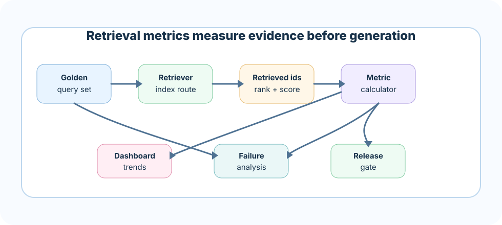

Only measuring final answers
Symptom: team cannot tell whether retrieval or generation failed.
Better move: measure retrieval before context injection and generation.
Retrieval metrics tell you whether the right evidence reached the prompt. If retrieval fails, the generator is forced to guess, refuse, or answer from weak context.
A RAG answer can be bad for many reasons: the prompt may be weak, the model may ignore evidence, or the retrieved context may be wrong. Retrieval metrics isolate the retrieval step. They answer: did we fetch the source that could answer the question?
The best metric set tells you both recall and rank quality, then shows which slice is failing.
Define which chunk, document, or passage should support each query.
Capture result ids, rank, score, filters, route, and index version.
Use Recall@K, Precision@K, MRR, hit rate, and nDCG where useful.
Tune chunking, filters, hybrid routing, reranking, or index release by failure type.
Imagine a search party looking for one important file in a giant archive. Recall asks, "Did the team find the file at all?" MRR asks, "How quickly did they find it?" Precision asks, "How much junk did they bring back with it?"
A senior engineer does not ask only one question. If the file appears at rank 40, recall may look decent, but the prompt may never see it. Rank matters.
Gold evidence is the expected source support for a query. It may be a document id, chunk id, paragraph span, table row, or citation id. Without gold evidence, retrieval metrics become vague.
Precise and useful for tuning retrieval, but requires careful labeling.
Easier to label, but can hide wrong-section retrieval.
Some questions require several sources, such as policy plus exception addendum.
Recall@K asks whether the relevant evidence appeared in the top K retrieved results. It is usually the first retrieval metric to track because missing evidence cannot be fixed later by prompting.
gold chunks: S2, S9
retrieved top 5: S1, S2, S4, S8, S9
Recall@5 = 2 / 2 = 1.0Precision@K asks how many of the top K results are relevant. High recall with low precision can still hurt the model because noisy chunks crowd the prompt.
The right chunk is present, but surrounded by noise.
The system returns clean results, but misses important evidence.
Candidate pools may optimize recall, final context should optimize precision.
MRR rewards systems that put the first relevant result near the top. If the first relevant chunk appears at rank 1, reciprocal rank is 1.0. At rank 5, it is 0.2.
query A first relevant rank = 1 -> 1/1 = 1.0
query B first relevant rank = 4 -> 1/4 = 0.25
MRR = average reciprocal rank across queriesnDCG is useful when relevance has grades, such as perfect, partial, weak, and irrelevant. It rewards highly relevant evidence appearing early.
Hit rate asks whether at least one relevant result was retrieved. It is simple and helpful for dashboards, but it can hide rank and completeness problems.
Fast health checks and broad trend monitoring.
A hit at rank 50 may not help final answer quality.
MRR, Recall@K, and final context precision.
Average metrics can lie. A system may look fine overall while failing legal queries, long documents, PDF tables, exact IDs, or a specific tenant.
Different corpora often need different retrieval strategies.
IDs and clauses may need sparse or hybrid search.
Parsing quality can drive retrieval quality.
High-risk flows need stricter gates and deeper analysis.

A production dashboard should show trends, not just one score. Track metrics by index version, retriever route, embedding model, reranker version, and source freshness.
Recall@K, MRR, nDCG, citation support after generation.
Latency, timeout rate, empty retrieval rate, filter drop rate.
Stale hit rate, index lag, deleted-source hit rate.
Retrieval changes should pass gates before production rollout. A new embedding model, chunking strategy, filter, or reranker can improve one slice and break another.
A strong answer sounds like this: "I evaluate retrieval separately from generation. I label gold evidence, run benchmark queries, compute Recall@K, Precision@K, MRR, hit rate, and sometimes nDCG, then slice by domain and query type. I use metrics to decide whether to tune chunking, filters, hybrid search, reranking, or index releases."
Next, test your retrieval-metric judgment in the quiz, then build a metric calculator and release gate in the project.